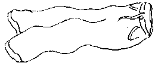

Jusqu'acheteu le Caouain s'était tréjous félicité que dans sanmênage ch'tait li qui portait les braies, mais dépis tchique temps l'ordre des choses a subi un changement.
J'en fis la dêcouvert i'y a à peu près tchinze jours, quand j'adonni à rentrer siez-nous tout-à-fait inattendu, etayant occasion de ramonte dans notr'e mansarde je fus presque êbloui en aperchevant êtendus sus l'lièt un espèce de p'tit veston et une pather de brais de toutes les couleurs de l'arc-en-ciel, fabritchies avec une êtoffe que j'ai apprins d'pis, s'appelle de la cretonne.
Je n'pouvais pas en r'venin, et j'resti appié par sus l'pid du liet à comtemplier chenna et à tâchi de trouver une solution au problème.
Tout d'abord je m'imagini que Marie Hibou avait voulu me prépather une petite surprinse et voulait me faithe présent d'une pathe de pyjamas.
Mais pourtant j'pensi, che n'peut pas être chenna car on sait bain que jamais je n'pourrais enduther d'être enflubé dans une patheille invention.
“Ah!” j'dis à mé-même, “je crai qu'j'ai d'viné!”
Ch'est justement là le sorte d'habillement qu'est si favorisé par nos jolies jeunes touristes quand i' s'promènent dans la ville, et ch'est quâsi seux que chenna appartcheint à iune de ieux et que Marie Hibou li a loué not'e mansarde.
Si ch'est d'même, ou n'aithait pas deu faithe ditèt sans m'en pâler, mais ch'est égal, et je n'm'en vais pas faithe d'objections par exemple!
Je les prins dans ma main et je d'vallé en bas pour faithe part de ma trouvaille au Chef, mais en entrant dans l'bureau tch'est qu'j'aperchus sinon Marie Hibou lyi-même qu'était à li pâler. (Entrenous, je crai qu'i' y a un p'tit mio trop d'amiêtchi entre ches deux-là).
Dèsque Marie vit che qu'j'avais à la main ou fit un brèt et d'vant que j'pus l'empêchi, ou me l's avait airaichis desmains.
“Ouest qu'tu as ramassé chenna?” qu'ou s'êcriyi.
“Je les ai trouvés sus man lièt.” j'li raîponni.
“Oh! je criyais que je l's avais muchis dans mon titheux.”
“Ch'n'est pas tout chenna,” j'li dis, “à tch'est qu'chenna appartchaint?”
“Ch'la n't'er'garde pas!” qu'ou m'dit, “mais ch'est à mé, s'tu veurs saver.”
“Et tch'est qu'tu t'en vas en faithe?” je li d'mandi.
“Dame! je m'en vais les mettre quand bouan m'sembliétha,pour aller m'promener.”
“Ah! jamais d'la vie!” je i dis, “jamais je n'permettrai que tu ailleste faithe motchi au public et humilier t'n homme de chute faîchon-là! J'aimethais mus –
“Pourtant,” qu'ou s'fit,”ch'est la mode acheteu et j'ai parfaitement l'drouait de m'habillyi comme bouan m'semblye, sustout avec la grande chaleu qu'i' fait!”
“Je n'sis pas gêné d'la chaleu! Si ch'est qu'tu trouves trop caud reste siez-té!Tu pâles de mode? Tout chenna est bouan pour les jeunes drinettes qi vainnent lus ballader ichin dans l'êté, mais pour des femmes de la localité, che s'sait un crime impardonnablye! Je t'défends de sorti d'la maison dans ches hardes-là!”
Duthant not'e querelle je m'aperchus que l'Chef était bain amusé et qu'i' ritonnait d'une manièhte à m'faithe endjâblier. Je li aithais bain fichi une potée d'encre à la tête!
Je savais bain que malgré toutes mes protestations la sacrée Marie f'thait à sa tête, jamais j'nai peu la c'mander.
Eh bain, i n's'arrivi rain pour deustrais jours et je m'imagini que p't-être, opprès tout la Marie était v'nue à r'prendre un mio d'bouan sens, mais v'là-t-i pas qu'un bouan jour v'là l'téléphone qui sonne.
J'tait mé qui raîponni.
“Tch'est qui pâle, s'i' vos plaît?” je d'mandi.
Une grosse vouaix, comme un orage raîponni,
“Ch'est l'Chantn'yi d'la s'maine, à la Station d'Police. Le Chef est i' là?”
“Nennin,” j'li dis, “mais ch'est mé qui le r'présente. J'peux-t-i'li donner vot'e message?”
“Oui, et dêlièmment! Dites-li que iun d'nos hommes avec une crétuthe qu'était à s'promener dans la Rue d'Drièthe, habillyie d'une manièhte tout-à-fait indécente. Oulle a d'abord erfusé de raîpondre à mes tchestions et n'voulait pas divulguer s'n identité, mais opprès que je l'avions enfrumée pour une heuthe dans les cellules oulle a enfin admins qu'ou s'appelait Marie Hibou et nos a donné s'n adresse comme étant au Bureau des Chroniques.”
“Marie Hibou!” je m'êcriyi, “i'n'est pas possiblye!”
“Mais si fait il est possiblye! Me prenous pour un menteux?”
Je vins si ênervé que je n'pouvais à peine li raîpondre,
“Oh extchusez, Moussieu, mais chute nouvelle-là m'a si bouleversé qu –
“J'n'ai pas l'temps d'ardgumenter avec vous,” qu'i' s'fit “dites au Chef qu'il envie tchiqu'un immédiatement avec des habits d'femme convenablyes pour li couvri la carcase afin que j'puissions le renvier siez-lyi en cherge d'un policemainne!”
Et en même temps i' r'pendi s'n appareil et coppi la conversation tout court.
Ou pouvez penser mes chiers lecteurs, dans tchi position qu'je m'trouvais, mé!
Je n'aithais pas 'té à la Station mé-même porter ches habits-là quand nou m'aithait donné chinquante louis! Mais tchi faithe?
Je d'mandi au jeune Moussieu Simon de m'faithe le pliaisi d'y allermais i' m'raîponni que che n'était pas là partie d'ses devoirs.
Je suppliyi ensuite le fils du Chef.
“Allez au diable!” qu'i' m'raîponni.
Tout chenna m'mins quâsi fo.
Je m'en fus dans l'imprimethie trouver Mess Pain, not'e foremainne et je li explitchi la position.
Avec sa courtouaisie habituelle i'm'dit tout d'suite qu'i' s'en allait y envier iun d's imprimeurs, mais dès qu'i' surent de tchi qu'i' s'agissait, i' r'fusithent tous catégoriquement.
Finalement, opprès les aver suppliees quâsiment sus mes g'nors, iun d'ieux proposi de haller ès noeuds au sien qu'ithait et les autres consentithent, un chatchun espéthant du fond de s'n âme que che ne s'sait pas li.
Le sort tombi sus l'pouore djâblye qui huile les machines, et i' s'en fut avec le ballot.
Un quart d'heuthe opprès v'là Marie qu'arrive.
Oulle 'tait dans une futhie abôminablye et c'menchi à en chanter contre la police et m'nichi de présenter une rémontrance contre l'Chantn'yi et ainsi d'suite, mais ou s'est r'calmée d'pis, et jen'crai pas qu'oulle est disposée de r'quémenchi.
Oulle a ieu sa leçon!
Caouain
Les Chroniques de Jersey 6/9/1930
Viyiz étout: